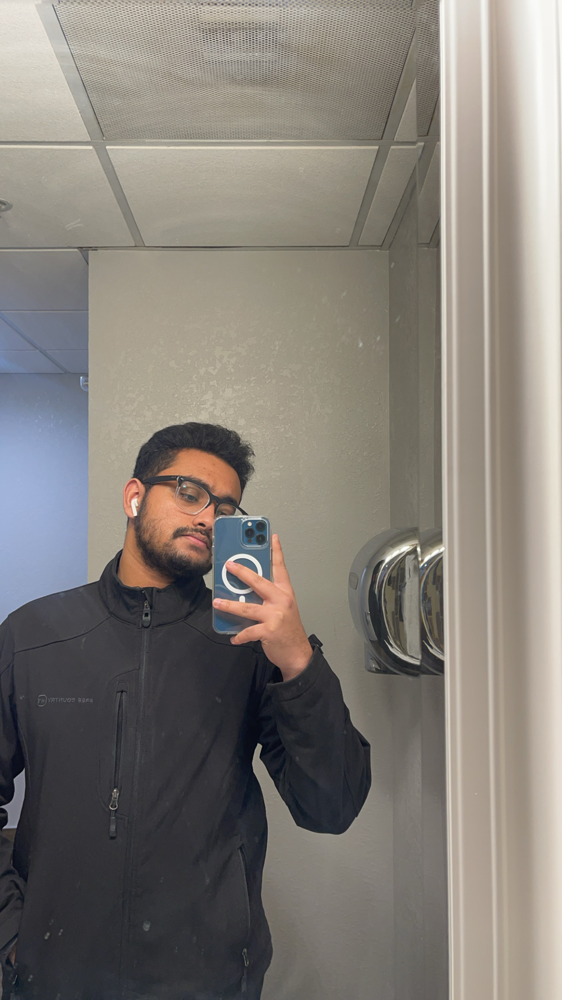

About Me
I am a passionate software developer dedicated to creating innovative technology solutions that empower language learners and promote global connectivity.
Professional Image
Education
- Master’s in Computer Science
University of South Carolina, Expected Graduation: May 2029 - Bachelor’s in Computer Science
Kristu Jayanti College, Graduated: March 2027
Skills
- Programming Languages: Java, C++, Python, HTML, CSS
- Tools & Technologies: VS Code, GitHub, Javadoc, MySQL
- Software Development: Object-Oriented Design, Agile Methodologies
- Soft Skills: Team Collaboration, Communication, Leadership
Experience
- Software Developer
Language Learning App Project (2028 - 2029) - Lead Pianist
Church Organization (2027 - 2029)
Projects
- Finite Element Analysis Program
Analyzed beam deformation using FEM principles. - Language Learning Matching Game
Built a matching game for English and Filipino numbers.